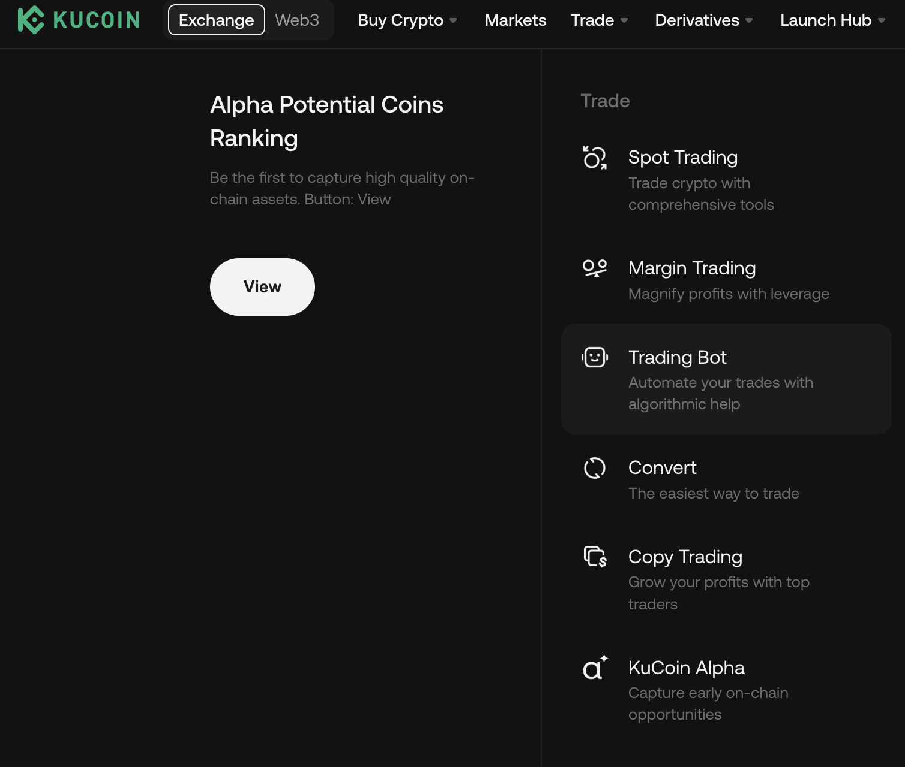
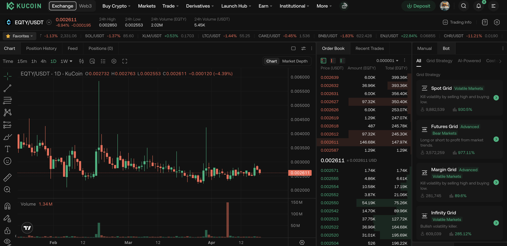
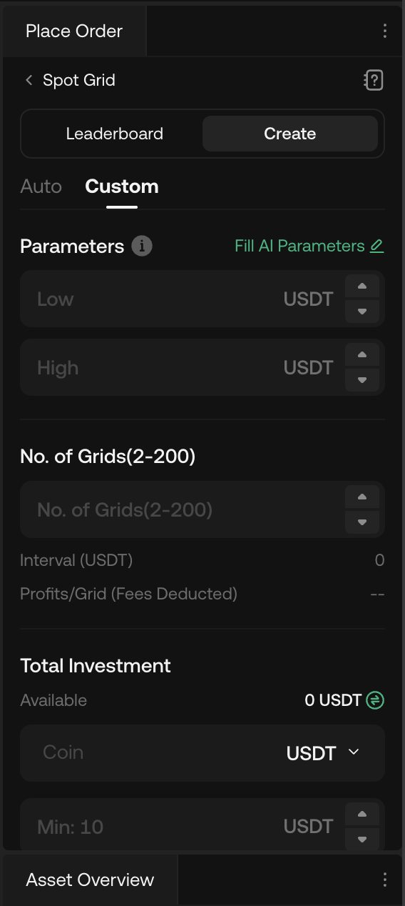
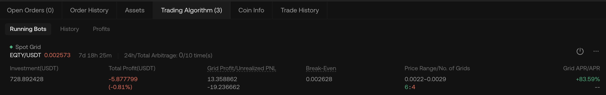
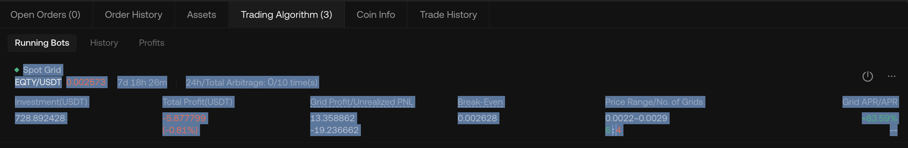
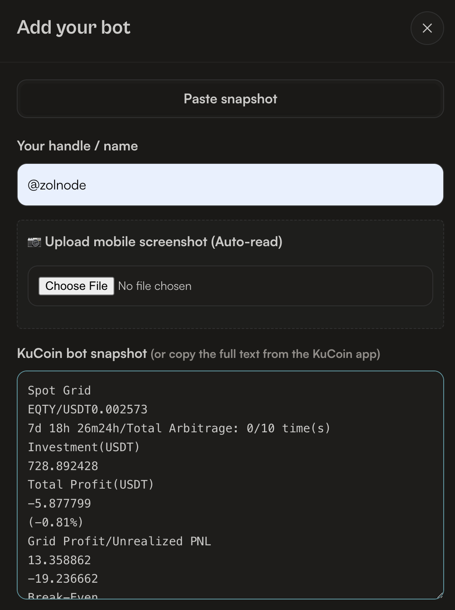
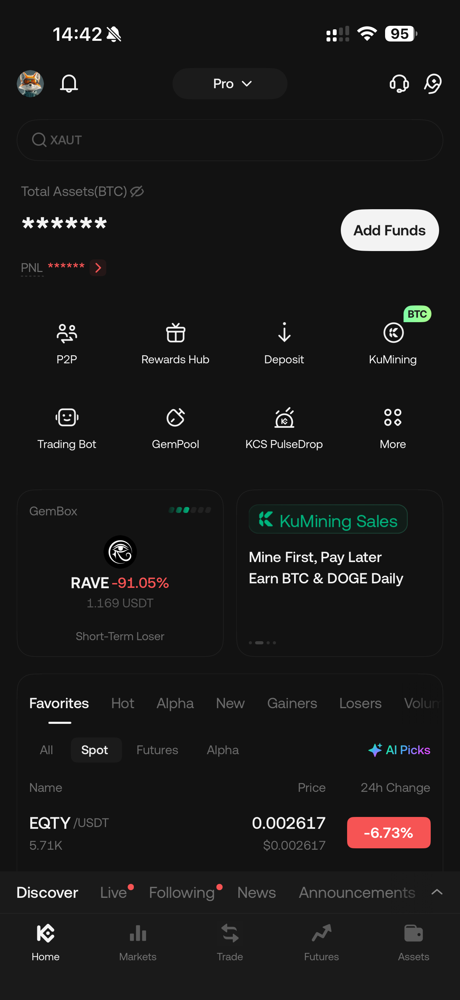
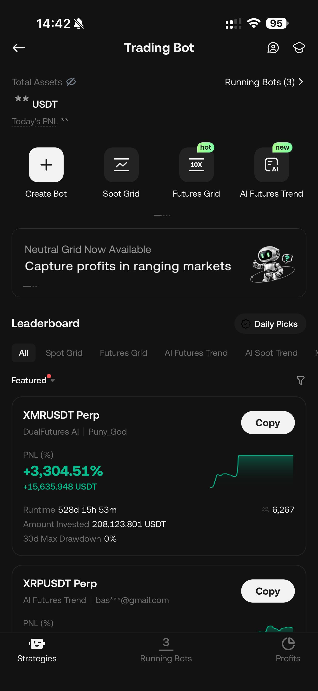
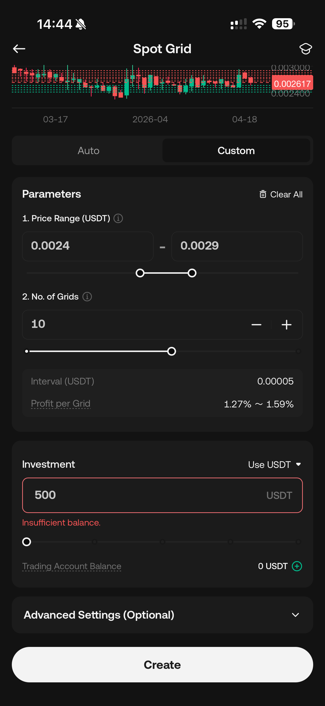
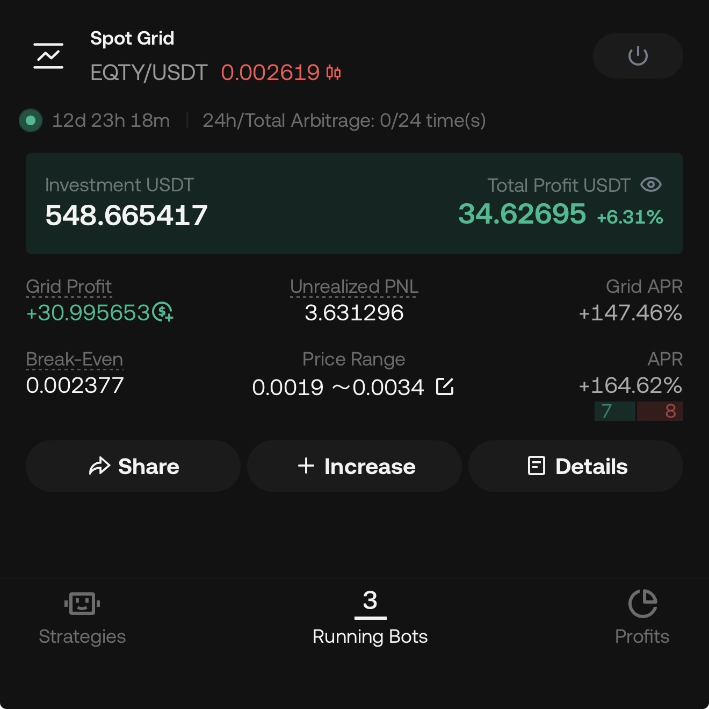

Log into your KuCoin account on your desktop browser. From the top navigation menu, hover over the Trade menu and select Trading Bot.

On the trading terminal, look at the right-side panel under the Bot tab. Select Spot Grid to begin configuring your bot.

Switch to the Custom tab. Here, you will configure the bot according to your chosen EQTY/USDT Strategy (A, B, C, D, or E).
Click the Create button to launch your bot.

Once your bot is created, scroll down below the chart to the Trading Algorithm panel. Click the Running Bots tab to view your active bot.

To sync this bot with the community dashboard, you need to copy its data. Click and drag your mouse cursor over the entire row of your running bot to highlight all the text, then press Ctrl+C (or Cmd+C on Mac) to copy it.

Open the EQTY Grid Monitor dashboard and click the Add Bot button. In the modal that appears:
@zolnode).Ctrl+V (or Cmd+V) to paste the text you copied.The dashboard's smart parser will instantly format the text vertically and extract all your metrics automatically.

Launch the KuCoin app on your phone. From the home screen, tap the Trading Bot icon in the main menu grid.

In the Trading Bot menu, you will see a list of popular bots. Tap on Spot Grid to start creating your bot.

On the Spot Grid configuration screen, select the Custom tab instead of Auto. Enter the parameters according to your chosen strategy (A, B, C, D, or E).
Tap the Create button at the bottom of the screen.

Once created, navigate to the Running Bots tab. Tap on your active EQTY/USDT bot to see its detailed performance, including your Grid Profit, Total Profit, and Break-Even point.

To sync your bot to the dashboard, simply take a screenshot of the running bot details screen (the same screen shown in Step 4).
Then, open the EQTY Grid Monitor dashboard, click Add Bot, type your handle, and click the Upload mobile screenshot button. The dashboard will automatically read the screenshot and extract your stats!